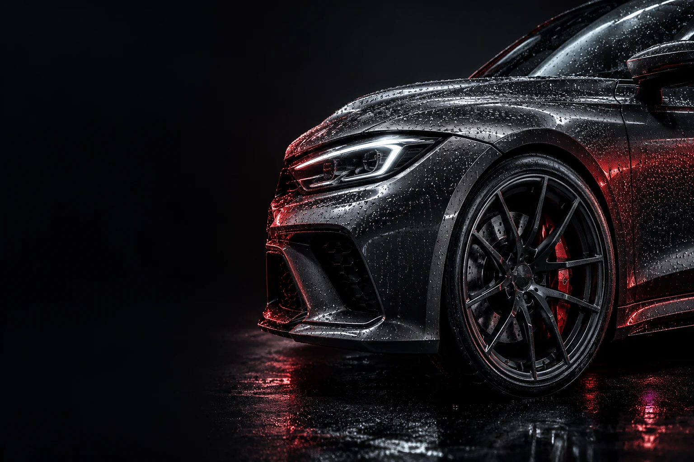
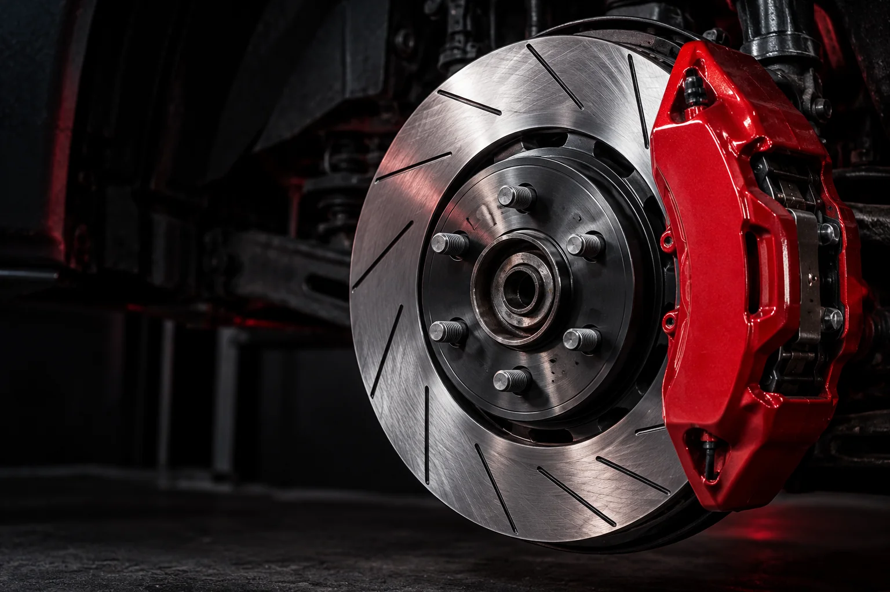

ТВОЄ АВТО.
НАША СПРАВА.
Діагностика, обслуговування та ремонт.
Від планового ТО до складної несправності.
УСЕ, ЩО
ПОТРІБНО АВТО.
Планове обслуговування чи несподівана поломка — розберемося з причиною. Оберіть напрям і зв’яжіться з нами, щоб уточнити деталі.

ВПЕВНЕНІСТЬ
У КОЖНІЙ
ЗУПИНЦІ.
Стук у підвісці, вібрація чи незвичний звук під час гальмування? Час перевірити, що відбувається з автомобілем.
ЗНАТИ,
ЩО З АВТО.
Наш Instagram Ремонт починається
з розуміння причини.
BRS Station — автосервіс на Хуторівці у Львові. Займаємося технічним обслуговуванням, діагностикою та ремонтом автомобілів.
Пояснюємо, у чому несправність. За потреби показуємо стан авто у фото / відеозвіті, щоб ви розуміли, що саме потребує уваги.
КІЛЬКА
ВІДПОВІДЕЙ.
Як записатися на сервіс?
Зателефонуйте за номером +380 98 346 58 11 або напишіть у Instagram. Назвіть модель авто й опишіть, що потрібно зробити. Час візиту узгодимо під час розмови.
Скільки коштуватиме ремонт?
Вартість залежить від автомобіля, несправності, потрібних робіт і запчастин. Зв’яжіться з нами для уточнення. Якщо причина невідома, спочатку може знадобитися діагностика.
Що підготувати до першого звернення?
Марку, модель та рік випуску авто. Якщо є сторонній звук, помилка на панелі чи інший симптом, розкажіть, коли він з’являється. Це допоможе зорієнтуватися перед візитом.
Де знаходиться BRS Station?
Львів, вул. Хуторівка, 23а. Працюємо з понеділка до п’ятниці, 09:30–18:30. Відкрити адресу на мапі.
ЗУСТРІНЕМОСЬ
НА СЕРВІСІ.
Розкажіть, що з вашим авто.
Домовимося про наступний крок.